Offices Gallery, Florence. Great Italian Masters on Stamps
← Recently Modernized Pages · Art Gallery · Home
Uffizi Gallery, Florence
Great Italian Masters
Hall 7. Paolo di Dono, called Ucello (1396-1475). The Battle of San Romano, about 1456. The study of the perspective take at Ucello a quasi maniacal dimension, giving to this work quite a sense of an abstract reality, in a agitated play of fallen horses, of long lances and of rigor of geometrical forms, everything being situated in an imaginary landscape with dark colors. And they are exactly those characteristics that represent today the seduction and the "modernity" of the master's picture. This big battle painting was executed for the Medicis family and was probably used as a part of the decoration of the residence of Lorenzo Magnifico in his palace of Via Larga (today the palace Medici-Riccardi).
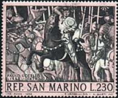 |
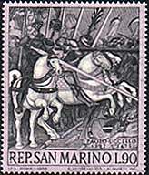 |
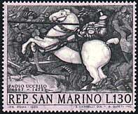 |
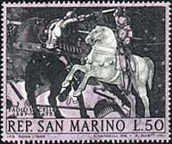 |
Hall 28. Titian (Tiziano Vecellio) (about 1490 - 1576). The Venus of Urbino, 1538. Titian is the undisputed master of a whole century of Venetian painting, that dominated the panorama of the 16th century Italian art, opposing the virtuosity of colors to the intellectual refinement, attached especially to the Mannerism of the Central Italy. This work, that belongs to the masterpieces of the artistic maturity of the painter, was ordered by the duke of Urbino, Guidobaldo II della Rovere. The sentiment of the powerful innovative force of the Titian's painting is in the warm tonality of colors, in the fresh and thick reproduction of skin and in the episode of realistic intimacy of maidens in the background.
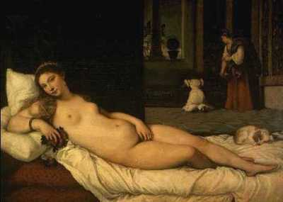 |
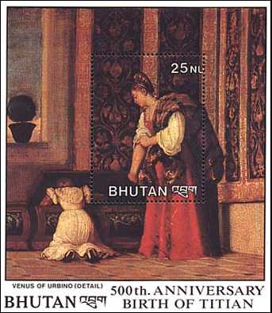 |
Hall 28. Titian (Tiziano
Vecellio) (about 1490 -
1576). Flora, 1515. It is one of the most popular paintings of Titian,
being a work of youth, highly connected to Giorgione. But it is already
imprinted by that exuberance of forms and by that intensity of color that characterize
the style of the painter.
Hall 45. Antonio
Canal, named Canaletto. (1697-1768).
St. Mark's and Doge's Palace. The "Vedutismo", a painting
style of the 18th century, had as great representative the painters Canaletto
and Guardi. At Canaletto the image is characterized by a perfect perspective,
a clear atmosphere, cold colors and an objective, photographic reconstruction
of the reality.
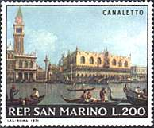 |
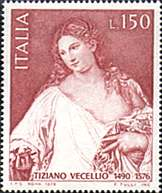 |
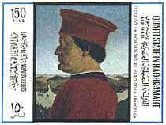 |
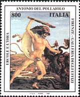 |
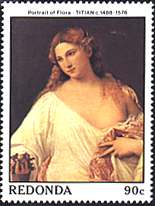 |
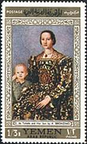 |
Hall 7. Piero
della Francesca (about
1420 - 1492). Portrait of Federico de Montefeltro, 1465. Executed at
the court of Urbino, Piero shows his connections with the themes and the
problems othe Flemish portrait art. The visage, regarded with a meticulousness
without pity is dominant, being immobilized in the front, in face of a
profound and bright background. Della Francesca was one of the adepts of Paolo
Ucello in what concerns his extreme positions on the theme of perspective.
Hall 9. Antonio
Benci, named Pollaiolo (about
1431 - 1498). Hercules and Hydra. This work, painted on wood, of very
small dimensions, was robbed in 1955 and retrieved eight years later in the
USA. It is a remarkable example of the vigorous style of the master. The
figure of the fighter is loaded with a dramatic force through the high tension
of contour lines, a tension that is transmitted to the environment.
Hall 18.
Agnolo Allori, named
Bronzino (1503 - 1572).
Portrait of Eleanor of Toledo with Her Son, about 1545. This is
one of the nicest paintings of Bronzino that reaches a very high level of
artistic perfection. More than the splendid and melancholic face of Eleanor,
daughter of the vice-king of Naples and wife of Como I, the protagonist of
this painting seems to be the very nice and very rich dress, that give the
impression to materialize in the various tones of light. The child near
Eleanor is the future cardinal Giovanni de Medicis.
Link: Titian on this site